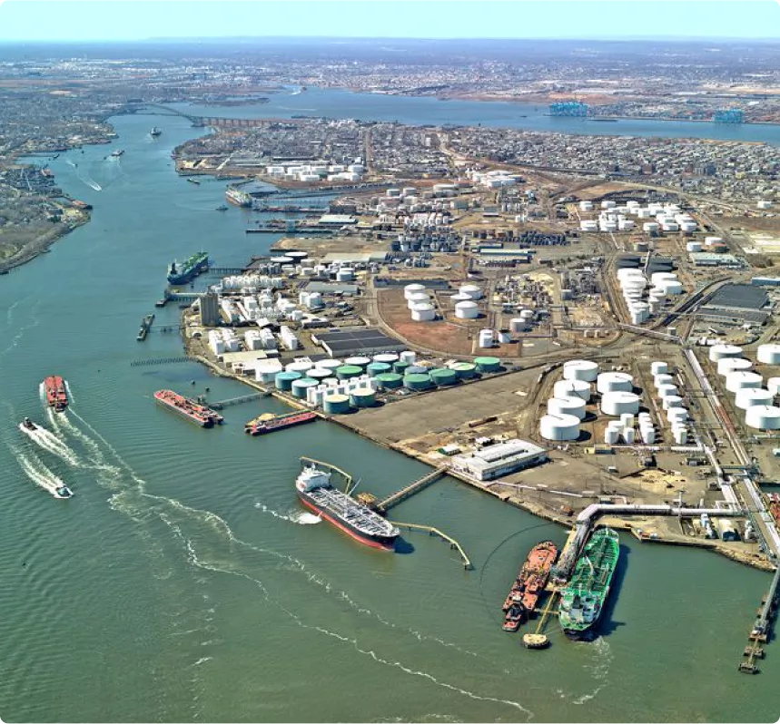
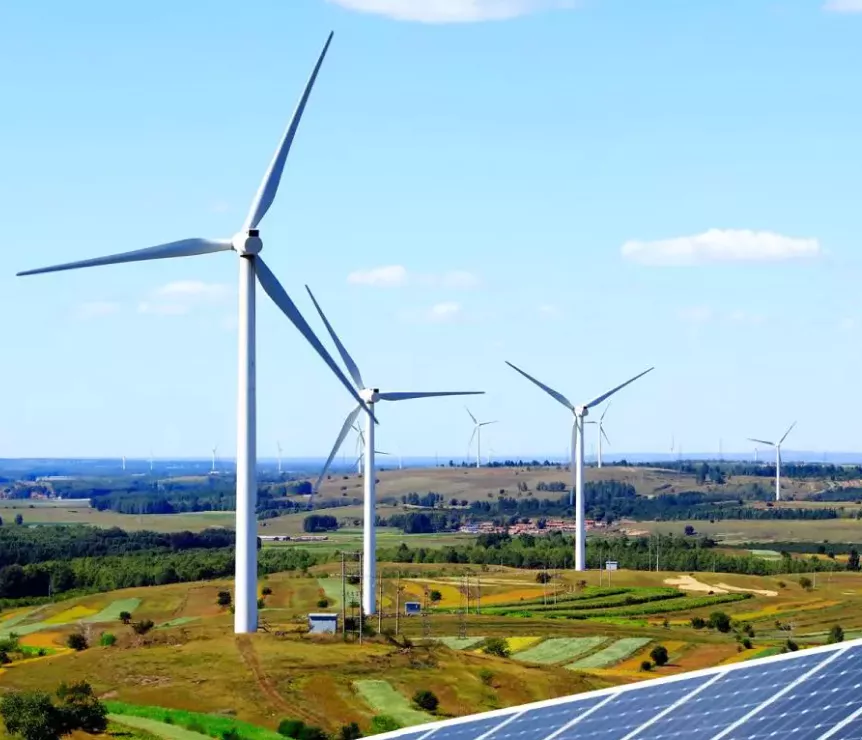
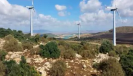
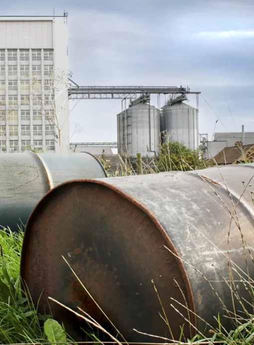
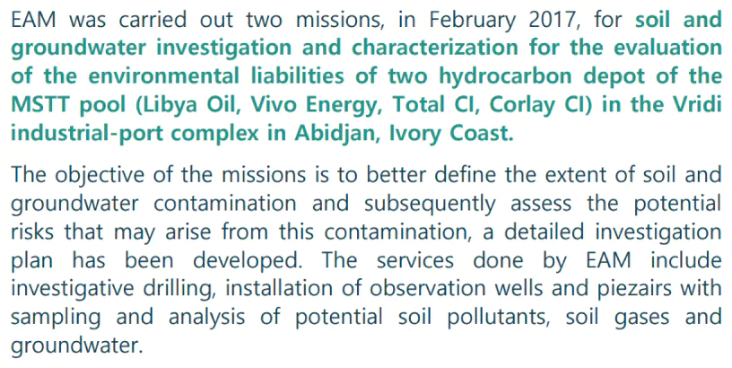
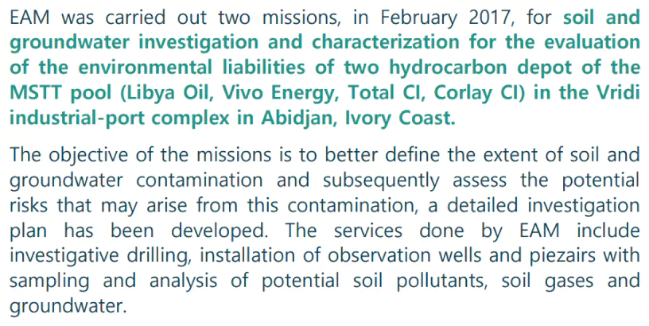

EAM |
Projects
An overview of EAM projects in Tunisia and worldwide:

HARBOUR & TERMINAL
PROJECTS
PROJECTS
Environmental monitoring campaign of the
dredged
material disposal site at the commercial port of Zarzis
material disposal site at the commercial port of Zarzis
the study area's characteristics, physical
monitoring, physico-chemical monitoring,
biological monitoring ...
2018 - 2021
Zarzis | Tunisia
EI Notice of the construction works of berths No .
8 and No . 9 for containers at Rades commercial
port
As a part part of the constitution of the dossier
of the OMMP at the commercial port of Rades.
Rades | Tunisia
EI Notice of the construction works of berths No . 8
and No . 9 for containers at the commercial port of
Radès
As a part part of the constitution of the dossier of
the OMMP at the commercial port of Rades.
Rades | Tunisia
Environmental Impact Assessment for Port Complex
La Goulette – Rades dredging
EIA for Port Complex La Goulette – Rades
dredging, Tunisia . The report was prepared in
accordance to the Tunisian regulation.
2007
Tunis | Tunisia
Identification and characterization of sites for
disposal of dredged material disposal sites from
commercial ports
As a part part of an OMMP project.
2002 - 2007
Tunisia | Africa
Study for the identification of dredged material
dumping sites in commercial ports
As a part part of an OMMP project.
2006
Tunisia | Africa
EIA of the maintenance dredging of the berths
No.1 and No.2 at the La Goulette commercial port
EAM has carried out a sampling campaign in
September 2019 in front of berths No . 1 and No
. 2 of the commercial port of La Goulette.
La Goulette | Tunisia
EI Notice for the construction project of a
cereal terminal at the commercial port of Radès
Drawn up in accordance with the terms of
reference established by the National Agency of
Environment Protection ANPE for port projects.
Rades | Tunisia

WIND & SOLAR
ENERGIES PROJECTS
ENERGIES PROJECTS
Environmental & Social Impact Assessment
of 04 Photovoltaic power plants
2019
of 04 Photovoltaic power plants
Tunisia | Africa
An analysis of the potential environmental impacts in Sfax,
Kasserine, Kébili and Tataouine.
Environmental & safety Impact Assessment
of the 30 MW Wind
of the 30 MW Wind
An analysis of the potential environmental impacts of
the project

Mateur - Bizerte | Tunisia
Environmental & safety Impact Assessment of the 10
MW Photovoltaic power plant
An analysis of the potential environmental impacts of
the project
2017
Kebili | Tunisia
Birds & Bats studies in Jbel Kesra & Serj in the
378 MW wind park project area
Seasonal bat surveys and bird surveys for migratory,
breeding, and wintering species...
2017
Siliana | Tunisia
Birds & Bats studies in Toujane in the 270MW wind
park project area
Bat and bird surveys in accordance with IFC Performance
Standard 6.
2016
Gabes | Tunisia
Environmental & Safety Impact Assessment of the 10
MW Photovoltaic power plant
Detailed project analysis : technical details,
ecological assessment, ...
Medenine | Tunisia
Environmental & safety Impact Assessment of the 1 MW
Photovoltaic power plant
An analysis of the potential environmental impacts of
the project
Enfidha | Tunisia
Environmental
& safety Impact
Assessment of the 30 MW Wind farm
& safety Impact
Assessment of the 30 MW Wind farm
Detailed project analysis : technical details,
ecological assessment, ...
2017
Thala - Kasserine | Tunisia
Bir Al Huffay - Sidi Bouzid | Tunisia
Environmental & Social Impact Assessment
of the 10 MW Photovoltaic power plant
of the 10 MW Photovoltaic power plant
Detailed project analysis : technical details,
ecological assessment, ...
Detailed project analysis : technical details, ecological
assessment, ...
2019

RISK ASSESSMENT & CONTAMINATED SITES MANAGEMENT PROJECTS

 

OIL & GAS
PROJECTS
PROJECTS
EIA for offshore 2D seismic survey
Environmental impact assessment related to the proposed seismic survey on the offshore Rafraf & Azmour Blocks in Northern Tunisia
2011
Environmental impact assessment related to the proposed seismic survey on the offshore Rafraf & Azmour Blocks in Northern Tunisia
Rafraf | Tunisia
ESIA of the Sakr-1 well in the offshore exploration
licence Sfax-Gulf of Gabès
The ESIA included a description of the drilling
operations, a presentation of the DNO Tunisia AS policy on
HSE...
2017
Gabes | Tunisia
EIA of the production center of the Baraka field in
Tazerka
An analysis of the potential environmental impacts of the
production center
2008 - 2009

Tazeka | Tunisia
EIA of well stimulation work Miskar A-01 , A-04 , A-05,
A-07ST1, A-14, A-15, A-16 and A-17
2018 - 2019
An analysis of the potential environmental impacts of the
exploration wells
Gabes | Tunisia
Technical Determination Study of the Douleb field
production center
The work done by EAM consists of a presentation of
SEREPT's policy in terms of HSE, ...
2014
Kasserine | Tunisia
EIA of the Jebel Kebir KB#2 exploration well in the North
Research Permit Chotts
An analysis of the potential environmental impacts of the
exploration well
Bizerte | Tunisia
Oil depot located at Petroleum Zone of Rades
EAM has been contracted for the preparation of the SNDP
Hydrocarbon Depot Redevelopment and Upgrading Project.
2017
Rades | Tunisia
Oil Depot located at La Skhira
2016
The project aimed at adding two new tanks the oil depot of
TANKMED.
La Skhira | Tunisia
Oum Echieh Storage and Pumping Station
EAM has been contracted for the preparation of the
classified establishment file for the Oum Echieh Storage and
Pumping Station, in Gabès.
2014
Gabes | Tunisia
Bir Ben Tartar Production Center
EAM has been contracted for the preparation of the classified establishment file for the Bir Ben Tartar production center, in Tataouine.
Tataouine | Tunisia
Mazrane Central Processing Facility
EAM has been contracted for the preparation of the classified establishment file for the CPF Mazrane, in Médenine.
Medenine | Tunisia
HAZARD & SAFETY
PROJECTS
PROJECTS
Ghrib Production Center
EAM has been contracted to prepare the classified establishment file for the Ghrib Production Center, in Tataouine.
Tataouine | Tunisia
SIA and Stakeholder Analysis for two Drilling well
Activities
OMV selected EAM to complete a Social baseline study and
stakeholder needs Assessment for two exploration wells
within Sidi Mansour offshore Block in the gulf of Gabès.

Gabes | Tunisia
Socio -Economic Baseline of Kerkennah Island
A Stakeholder and Socio -Economic Survey (SSES) was undertaken on Kerkennah Island.
Sfax | Tunisia
SOCIAL PROJECTS
Environmental and social due diligence audit of the Bir El
Haffay solar power plant project in Sidi Bouzid
The work done by our team consists of completing a site
visit, full analysis and a stakeholder engagement plan .
Sidi Bouzid | Tunisia
Social Baseline and Needs Assessment Study for Jenein Sud
Field Development
The work done by our team consists of completing a site
visit, full analysis and a stakeholder engagement plan .
Tunisia | Africa
OTHER PROJECTS
EIA of the construction and the operation of a sanitary
wastewater treatment plant at the Enfidha cement factory
Enfidha | Tunisia
EIA of the Thyna and Sidi Mansour substation connection
project
The EIA done includes the regulatory framework of the
project, a presentation of the promoter and the consulting
firm, description of the construction project for the
high-voltage power line (choice of line layout, financial
plan and characteristics of the power line), a baseline
analysis with recognition of the characteristics of the
biophysical and human environment, a project impacts on
the environment, a mitigation measures and an
Environmental Management Plan.
2004
Sfax | Tunisia
EIA for the 500 MW Baraca thermal power station
The project of the construction of the thermal power plant
with a heat output greater than 300 MW requires an impact
study. The EIA was carried out in accordance with the
World Bank's policy on environmental assessment, the World
Bank Discharge Criteria for Thermal Power Plants, the
criteria of the quality of the air of the World Bank, the
World Health Organization guidelines for air quality and
the World Bank Requirements: Baseline Data and Follow-up.
2002
Sfax | Tunisia